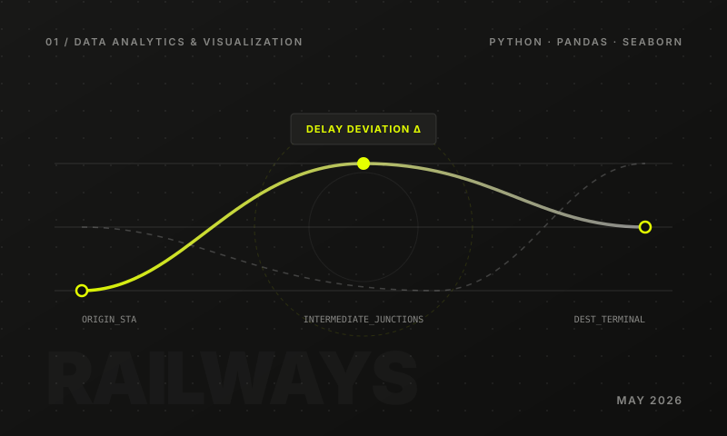

01 / DATA ANALYTICS · MAY 2026
Indian Railway Delays Analysis
Exploratory analysis of Indian Railway delay data by cleaning and preprocessing datasets and analyzing delay patterns across trains, stations and routes.
Python · Pandas · NumPy · Matplotlib · Seaborn
Analytics Study